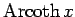
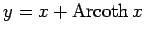

Inhalt Index DeskTop Bronstein

 Computeralgebrasysteme Graphik in Computeralgebrasystemen Graphik mit Mathematica Zweidimensionale Kurven
Computeralgebrasysteme Graphik in Computeralgebrasystemen Graphik mit Mathematica Zweidimensionale Kurven


Unter Berücksichtigung der im Abschnitt Areafunktionen dargestellten Eigenschaften der Funktion  läßt sich  folgendermaßen graphisch darstellen: